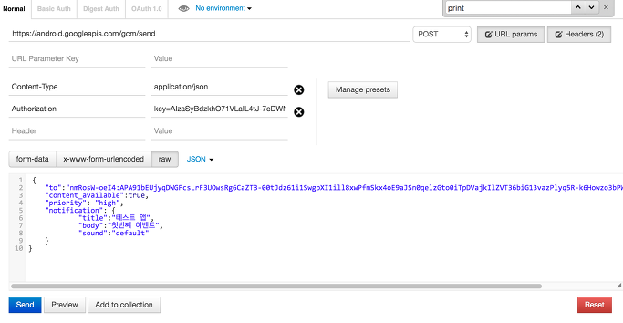

푸쉬 기능을 모두 GCM으로 사용하고 싶을 경우가 있다.
(아마 운영상의 이유로 푸쉬 기능을 모두 GCM으로 보내는 경우인데)
구글에서 해당 서비스를 제공하고 있다.
https://developers.google.com/cloud-messaging
해당 페이지에 접속해 가이드대로 따라하면 오케이
가이드 문서
[팁5] GCM으로 Android, iOS 둘다 push notification 을 할 수 있다.
주의
아래 설정에서 sandbox용도인지 product용도 인지 구분해줘야 배포시 문제가 생기지 않는다
1 2 3 4 5 6 7 8 9 10 11 12
| GGLInstanceID.sharedInstance().startWithConfig(instanceIDConfig) #if DEBUG registrationOptions = [kGGLInstanceIDRegisterAPNSOption:deviceToken, kGGLInstanceIDAPNSServerTypeSandboxOption:true] #else registrationOptions = [kGGLInstanceIDRegisterAPNSOption:deviceToken, kGGLInstanceIDAPNSServerTypeSandboxOption:false] #endif
|
테스트
실제 전송 테스트는
chrome에서 제공하는 postman을 통해 할 수 있다
Postman - REST Client shortcut
아래와 같은 양식으로 테스트 진행
1 2 3 4 5 6 7 8 9
| server https://android.googleapis.com/gcm/send type POST header Content-Type application/json Authorization key=<SERVER_API_KEY>
|
body
1 2 3 4 5 6 7 8 9 10 11 12 13 14 15 16 17
| { "to": "neZCjHSz01I:APA91bEZ7V-H0gxbkvtrQ2q4Rg...", "priority": "high", "notification": { "title": "테스트 앱", "body": "데이터 테스트", "sound": "default", "custom_data": { "key1": "value1", "key2": "value2" } }, "data": { "key1": "value1", "key2": "value2" } }
|

응답이 아래와 같은식으로 오면 성공
(success가 1로 찍힘)
1 2 3 4 5 6 7 8 9 10 11
| { "multicast_id": 4641604398078841000, "success": 1, "failure": 0, "canonical_ids": 0, "results": [ { "message_id": "0:1461147253377743%5c9c215e5c9c215e" } ] }
|
로그는 아래와 같이 AppDelegate.swift didReceiveRemoteNotification()에서 확인 가능
1 2 3 4 5 6 7 8 9 10 11 12 13 14 15 16
| [ gcm.message_id: 0:1461149417155575%5c9c215e5c9c215e, key1: value1, gcm.notification.custom_data: { "key1": "value1", "key2": "value2" }, key2: value2, aps: { alert = { body = "\Ub370\Uc774\Ud130 \Ud14c\Uc2a4\Ud2b8"; title = "\Ud14c\Uc2a4\Ud2b8 \Uc571"; }; sound = default; } ]
|